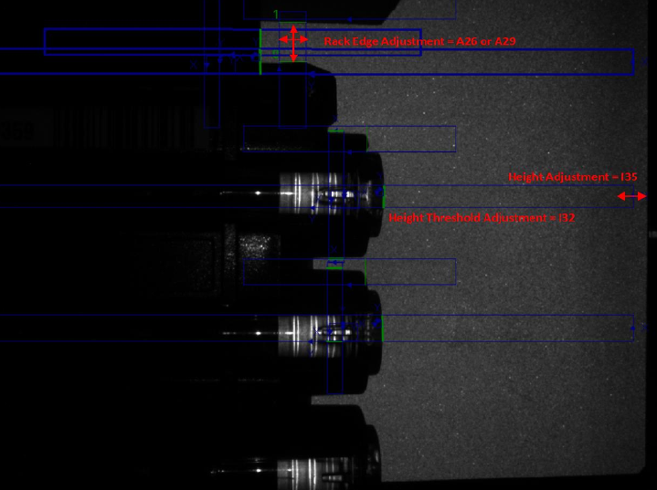

Note: If you use plastic tubes the camera calibrations may fail. Only use glass 13x100mm tubes. An orderable part number (D01860) for a glass 13x100mm tube (qty. 1 each) has been created in the event tubes are not readily available in the lab.
Note: During a procedure, if you use the In-Sight Explorer application to make an adjustment, after you make an adjustment, be sure to click an empty cell so that the spreadsheet formula calculations update.
Prepare the Instrument for Camera Calibrations
Be sure there is enough substrate, wash buffer, and reaction vessels in the instrument to complete the desired calibrations.
In the Console App select the
SYSTEM RUNNING button and go to
Stop > Pause to enter the instrument into a
YELLOW (Paused) status.
Calibrating the SPU Camera Calibration Setting
Be sure the instrument is in a
YELLOW (Paused) status.
In the Console App go to
Menu > Tools > Diagnostics > Intrusive Diagnostics to open the Intrusive Diagnostics page.
Press the
Windows key and go to
Cognex > In-Sight Explorer to open the In-Sight Explorer application.
In the In-Sight Explorer application go to
View > In-sight Network to open the In-Sight Network pane.
In the In-Sight Network pane, right-click the sample presentation unit (SPU) camera and select
Show Spreadsheet View.
In the Console App on the Intrusive Diagnostics page select
Start Session to enter the instrument into a
BLUE (Maintenance) status.
Select
Camera Calibration to open the Camera Calibration page.
In the Camera Function column select the
SPU Camera Calibration checkbox.
Clear any other check boxes.
In In-sight Explorer, on the menu bar select
Record to record the session in case of a failure.
Fill one cup rack with empty 2mL cups in each position.
Fill one tube rack with empty 13x100mm tubes in each position.
Load the 2mL cup rack into the SPU.
Load the 13x100 tube rack into the SPU.
In the Console App on the Camera Calibration page select
Start Camera Calibration.
Close the onload door.
The positions should resemble the illustration below:
Figure 409: SPU Camera Positions

If the camera setting passes calibration, the Last Calibration column will display
Today and the Result column will display
Pass, and the Status pane will display the notification
Operation completed: Camera Calibration.
If the camera setting fails calibration:
Follow troubleshooting steps In the
SELECTED FUNCTION FAILURE REASONS pane, to adjust cells C21, C24, L32, L39, or K89 in the spreadsheet if necessary.
Note: If first two edges are not found, go to first rack image, adjust cell C21 and C24 and move the top box horizontally to the left. The box shown in picture at top should shift to the left. When lines 1 and 0 show up in picture adjust an additional -10 steps.
The reflector limit may be lower than the CMOS sensor limit. If that is the case, adjust cell L32 and L39.
If some of the cups are identified by the instrument as Hitachi cups instead of Beckman 2mL cups, go to cell K89 and decrease the threshold.
Note: Never adjust cell K89 >10
Run Calibration again to ensure containers pass.
In In-Sight Explorer clear the Record button to stop recording.